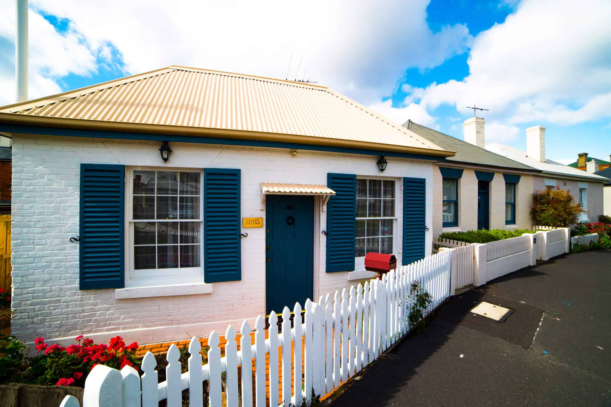
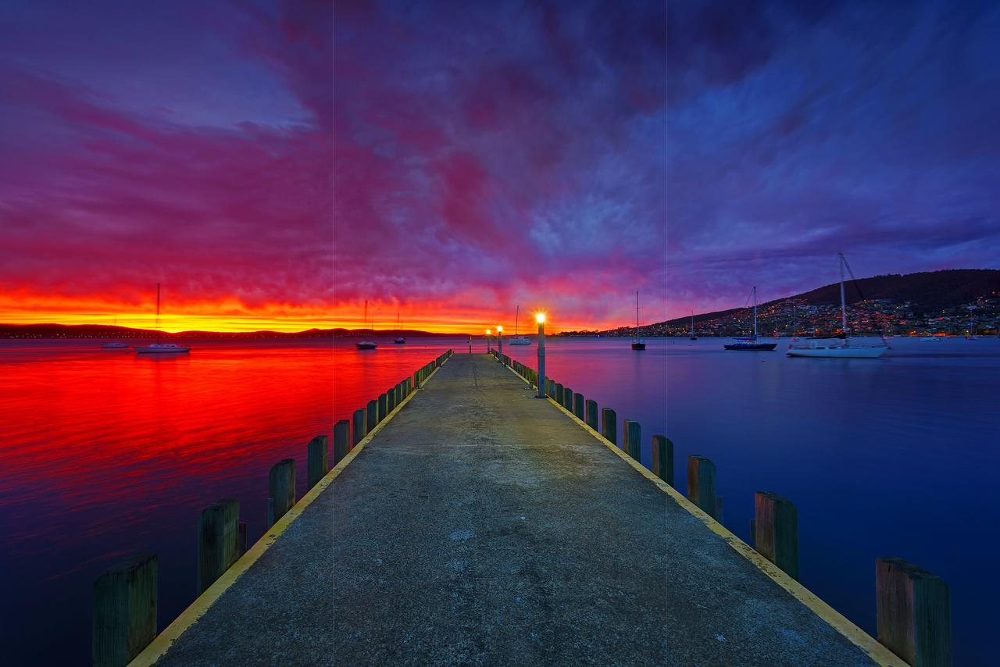

Tasmania
State of Australia
Tasmania
Tasmania is a fantastic island with little resemblance to continental Australia. It has its own unique flora, and you can meet animals, which can't be seen anywhere else. In general, the island has incredible natural diversity. There are 19 national nature parks, some of which are included in the UNESCO World Heritage List. But figuratively speaking, this whole island is a giant nature park of the planet Earth, which gives an uninterrupted and universal holiday for all wildlife lovers. However, the cities of Tasmania can offer tourists a lot of exciting things, too.

"We can't choose where we come from but we can choose where we go from there"

Sandy Bay
Sandy Bay is a suburb of the city of Hobart, Tasmania, Australia, located immediately south of the central business district, and adjoining the suburb of Battery Point. The suburb has many large homes, and is known as one of the city's prestigious areas. In the more southern areas of Sandy Bay, close to the water and also high on the slopes of Mt Nelson, are some of Tasmania's most expensive real estate.
Port Arthur
Port Arthur Historic Site in lutruwita/Tasmania, is one of Australia’s favourite tourist destinations. Located just 90 mins from nipaluna/Hobart by road, it’s a place of global significance – one of the 11 places that make up the UNESCO Australian Convict Sites World Heritage Property. We invite you to come and discover a special place of vivid history, cultural heritage and stories.
Bay of Fires
The Bay of Fires is known all over the world for its extraordinary clear blue seas, brilliant white beaches and striking orange lichen-cloaked boulders. It inspires a string of superlatives from every person lucky enough to come here, and it’s one of the most idyllic holiday destinations imaginable. The Bay of Fires coastline stretches for 50 kms from Binalong Bay in the south to Eddystone Point in the north. Take the Great Eastern Drive to St Helens, and then follow the signs to reach this dramatically beautiful part of the East Coast. Factor in some time here, because it is truly incredible. Explore the vast white-sand beaches and turquoise seas between Anson’s Bay and Eddystone Point or discover the many beaches like the Gardens, Jeanneret, Swimcart and Cosy Corner.
Battery
 
The battery was situated on the site of today's Princes Park. The guns were used to fire salutes on ceremonial occasions but were never called upon to repel an invasion.
Point
The battery was decommissioned after an 1878 review of Hobart's defences found that its location would tend to draw an enemy's fire onto the surrounding residential neighbourhood. The site was subsequently handed over to the Hobart City Council as a place of recreation and amusement. When the Council carried out works to beautify the park in 1934, they discovered tunnels which had served as a magazine for the original battery.